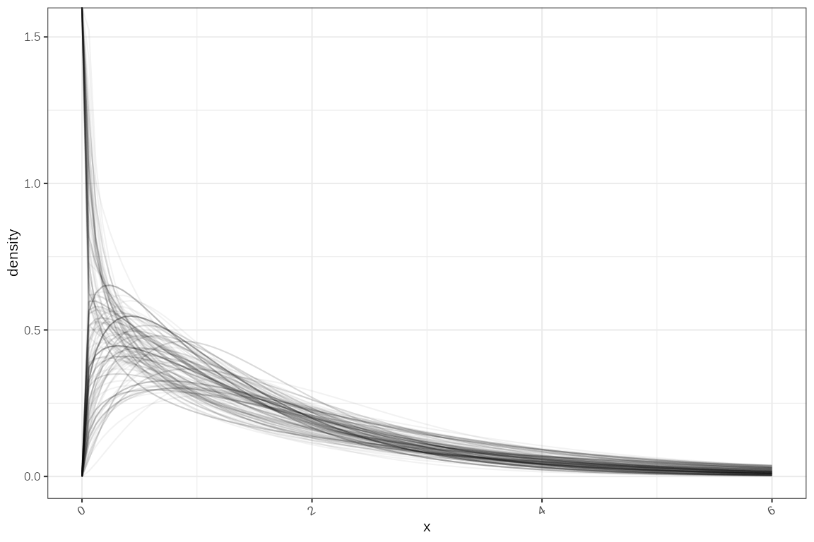
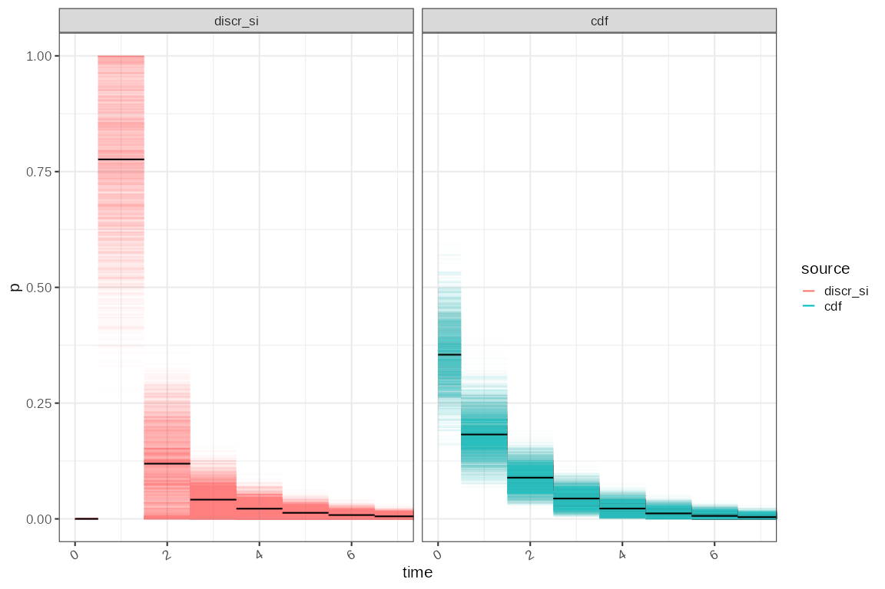

Infectivity profile discretisation
Source:vignettes/infectivity-profile-discretisation.Rmd
infectivity-profile-discretisation.RmdEstimation of the infectivity profile is usually done by fitting a
doubly censored survival model with an underlying gamma probability
distribution to data and can be done with MCMC using
EpiEstim. In this case we demonstrate this with a mock
Rotavirus dataset from EpiEstim:
clever_init_param <- EpiEstim::init_mcmc_params(si_data, "G")
SI_fit_clever <- coarseDataTools::dic.fit.mcmc(dat = si_data,
dist = "G", # Gamma distribution
init.pars = clever_init_param,
burnin = 1000,
n.samples = 5000,
verbose = 10000)## Running 6000 MCMC iterations
## MCMCmetrop1R iteration 1 of 6000
## function value = -31.57675
## theta =
## 0.13231
## 0.29055
## Metropolis acceptance rate = 0.00000
##
##
##
## @@@@@@@@@@@@@@@@@@@@@@@@@@@@@@@@@@@@@@@@@@@@@@@@@@@@@@@@@
## The Metropolis acceptance rate was 0.55033
## @@@@@@@@@@@@@@@@@@@@@@@@@@@@@@@@@@@@@@@@@@@@@@@@@@@@@@@@@
SI_fit_clever## Coarse Data Model Parameter and Quantile Estimates:
## est CIlow CIhigh
## shape 1.079 0.457 2.298
## scale 1.353 0.621 3.352
## p5 0.092 0.003 0.338
## p50 1.046 0.457 1.691
## p95 4.228 2.730 7.446
## p99 6.402 4.035 12.116
## Note: please check that the MCMC converged on the target distribution by running multiple chains. MCMC samples are available in the mcmc slot (e.g. my.fit@mcmc)The median estimate and confidence intervals are quantiles of the posterior samples each of which define a candidate gamma distribution. The density of a subset of these are plotted here.
# The sample quantiles
# apply(SI_fit_clever@samples,MARGIN = 2,FUN = quantile, p=c(0.5,0.025,0.975))
gammas = SI_fit_clever@samples %>%
dplyr::transmute(
rate = 1/var2,
shape = var1,
scale = var2,
mean = var1*var2,
sd = sqrt(var1)*var2,
lmean = log(mean),
lsd = log(sd))
max_x = ceiling(stats::quantile(stats::qgamma(0.95, gammas$shape, gammas$rate),0.75))
if (is.null(si_distr)) si_distr = EpiEstim::discr_si(0:max_x, stats::quantile(gammas$mean, 0.5), stats::quantile(gammas$sd, 0.5))
ggplot2::ggplot()+
purrr::pmap(gammas %>% utils::tail(200),
function(shape,rate,...) {
ggplot2::geom_function(fun = function(x) stats::dgamma(x, shape=shape, rate=rate), alpha=0.05, xlim=c(0,max_x))
}
)+
ggplot2::ylab("density")
Alternatives to generating these infectivity profile distributions from data are examined in the vignette “Sampling the infectivity profile from published serial interval estimates”, and include resampling from published estimates.
Estimation of
using EpiEstim requires that the infectivity profile
estimates are discretised. As the underlying Cori method requires that
the probability of infection at day zero is zero, EpiEstim
discretises the infectivity profile distributions using a offset gamma
distribution which requires that the mean of the infectivity profile
distribution is greater than 1. This results in some MCMC fitted
distributions being unsuitable especially in this case where the mean is
short.
If we are using a framework for estimating that does not have this requirement a more natural discretisation using the the cumulative density of the untransformed gamma distribution and cut points based on 0.5 day intervals is possible.
original_disc = gammas %>%
dplyr::filter(mean > 1) %>%
dplyr::transmute(
coll = dplyr::row_number(),
disc = purrr::map2(mean,sd, ~ dplyr::tibble(
a0 = c(0,seq(0.5,length.out = 50)),
a = seq(0.5,length.out = 51),
p = EpiEstim::discr_si(0:50, .x, .y))),
disc_type = "discr_si"
) %>% tidyr::unnest(disc)
cdf_disc = gammas %>%
dplyr::transmute(
discr = purrr::map2(
shape, rate, ~ dplyr::tibble(
a0 = c(0,seq(0.5,length.out = 50)),
a = seq(0.5,length.out = 51),
p = dplyr::lead(stats::pgamma(a, .x ,.y),default = 1) - stats::pgamma(a, .x ,.y)
)
),
coll = dplyr::row_number(),
disc_type = "cdf"
) %>% tidyr::unnest(discr)
tmp = dplyr::bind_rows(original_disc,cdf_disc) %>%
dplyr::mutate(disc_type=factor(disc_type, levels = c("discr_si","cdf")))
sources = length(levels(tmp$disc_type))
tmp_summ = tmp %>% dplyr::group_by(source = disc_type,a0,a) %>% dplyr::summarise(p = mean(p))## `summarise()` has grouped output by 'source', 'a0'. You can override using the
## `.groups` argument.
# tmp_mean = tmp %>% dplyr::group_by(source = disc_type,coll) %>%
# dplyr::summarise(mean = sum(a*p)) %>%
# dplyr::summarise(sd = stats::sd(mean),mean = mean(mean), parameter="mean") %>%
# dplyr::bind_rows(
# gammas %>% dplyr::summarise(sd = stats::sd(mean),mean=mean(mean), parameter="mean",source="none")
# )
ggplot2::ggplot(tmp %>% dplyr::rename(source = disc_type))+
ggplot2::geom_segment(mapping=ggplot2::aes(x=a0,xend=a,y=p, colour=source), alpha=0.01)+
ggplot2::geom_segment(data = tmp_summ, mapping=ggplot2::aes(x=a0,xend=a,y=p), colour="black")+
ggplot2::xlab("time")+
ggplot2::coord_cartesian(xlim=c(0,max_x+1))+
ggplot2::guides(colour = ggplot2::guide_legend(override.aes = list(alpha = 1)))+
ggplot2::facet_wrap(~source)
# tmp_meanThis alternative discretisation will affect reproduction number
estimation. We might expect that for a given growth rate the
reproduction number would be less for the cdf
discretisation as the mass of the probability looks lower. This would
mean that more generations of the epidemic can be expected in a unit
time and hence any observed exponential growth per unit time is due to
fewer secondary infections per primary infection.
We test this with a fixed value of the growth rate, and the
Wallinga-Lipsitch method of estimating reproduction number from growth
rate, for both types of discretisation. The Wallinga-Lipsitch method can
use arbitrary limits for the discretisation of the infectivity profile
and hence can produce an estimate with infectivity profiles that are
impossible to use in EpiEstim. For comparison the result of
estimating
using EpiEstim, and using the discr_si
strategy is also included.
R_t = tmp %>% tidyr::nest(dist = c(p,a,a0)) %>%
tidyr::crossing(r = c(0.4,0.2,0.1,0.05,0,-0.05,-0.1)) %>%
dplyr::mutate(
R_t = purrr::map2_dbl(r, dist, ~ ggoutbreak::wallinga_lipsitch(.x, y = .y$p, a0 = .y$a0, a = .y$a)),
source = sprintf("wall-lips (%s)",disc_type)
) %>%
dplyr::filter(!is.na(R_t))
R_t_summ = R_t %>% dplyr::group_by(r,source) %>% dplyr::summarise(
median = stats::quantile(R_t,0.5),
lower = stats::quantile(R_t,0.025),
upper = stats::quantile(R_t,0.975)
)## `summarise()` has grouped output by 'r'. You can override using the `.groups`
## argument.
r = c(0.4,0.2,0.1,0.05,0,-0.05,-0.1)
# select a shorter list of samples
tmp2 = tmp %>%
dplyr::filter(disc_type == "discr_si") %>%
dplyr::group_by(source = disc_type) %>% dplyr::reframe(
si_matrix = list(matrix(as.vector(p),nrow=51)[,1:250]),
r = list(r)
) %>% tidyr::unnest(r)
# tmp2$si_matrix[[1]][1:10,1:10]
compare_R = tmp2 %>% dplyr::mutate(R = purrr::map2(si_matrix, r, ~ {
ts = dplyr::tibble(
t = 0:30
) %>% dplyr::mutate(
I = 100*exp(.y*t)
)
return(EpiEstim::estimate_R(ts,
method="si_from_sample", si_sample = .x,
config = EpiEstim::make_config(t_start=2, t_end = 30))$R)
})
)## Warning: There were 7 warnings in `dplyr::mutate()`.
## The first warning was:
## ℹ In argument: `R = purrr::map2(...)`.
## Caused by warning:
## ! Unknown or uninitialised column: `dates`.
## ℹ Run `dplyr::last_dplyr_warnings()` to see the 6 remaining warnings.## Rows: 7
## Columns: 14
## $ source <fct> discr_si, discr_si, discr_si, discr_si, discr_si, …
## $ si_matrix <list> <<matrix[51 x 250]>>, <<matrix[51 x 250]>>, <<mat…
## $ r <dbl> 0.40, 0.20, 0.10, 0.05, 0.00, -0.05, -0.10
## $ t_start <dbl> 2, 2, 2, 2, 2, 2, 2
## $ t_end <dbl> 30, 30, 30, 30, 30, 30, 30
## $ `Mean(R)` <dbl> 1.6869502, 1.3182603, 1.1574308, 1.0844530, 1.0186…
## $ `Std(R)` <dbl> 0.11178630, 0.05272504, 0.02853700, 0.02154534, 0.…
## $ `Quantile.0.025(R)` <dbl> 1.5204139, 1.2345762, 1.1091722, 1.0451210, 0.9783…
## $ `Quantile.0.05(R)` <dbl> 1.5268640, 1.2410459, 1.1143866, 1.0505619, 0.9844…
## $ `Quantile.0.25(R)` <dbl> 1.5937495, 1.2761596, 1.1354775, 1.0691486, 1.0045…
## $ `Median(R)` <dbl> 1.6720701, 1.3109478, 1.1547614, 1.0834827, 1.0186…
## $ `Quantile.0.75(R)` <dbl> 1.7803827, 1.3637135, 1.1793698, 1.0990892, 1.0323…
## $ `Quantile.0.95(R)` <dbl> 1.8822181, 1.4086249, 1.2053782, 1.1210002, 1.0531…
## $ `Quantile.0.975(R)` <dbl> 1.9120433, 1.4212829, 1.2135297, 1.1280083, 1.0601…
ggplot2::ggplot(R_t_summ )+
ggplot2::geom_point(ggplot2::aes(y=median, x = factor(r), colour = source), position=ggplot2::position_dodge(width=0.4))+
ggplot2::geom_errorbar(ggplot2::aes(ymin=lower, ymax=upper, x = factor(r), colour = source), width=0.2,position=ggplot2::position_dodge(width=0.4))+
ggplot2::geom_point(data = plot2data, mapping=ggplot2::aes(y=`Median(R)`, x = factor(r), colour="epiestim (discr_si)"))+
ggplot2::geom_errorbar(data = plot2data, mapping=ggplot2::aes(ymin=`Quantile.0.025(R)`, ymax=`Quantile.0.975(R)`, x = factor(r), colour="epiestim (discr_si)"), width=0.1)+
ggplot2::xlab("Growth rate (days⁻¹)")+ggplot2::ylab("Reproduction number")
We see a noticeably less extreme estimate for the reproduction number
when the infectivity profile is discretised with the unadjusted
cdf strategy compared with the EpiEstim
inbuilt discr_si strategy. This is worse as the growth rate
increases, with discr_si based estimates being un to 20%
higher in extreme growth rate scenarios. The bias will be accentuated in
this example as it contains a very short serial interval, which makes
the discretisation error more apparent. We would expect to see much less
bias due to discretisation if dealing with diseases with longer serial
intervals.
Conclusion
The methods involved in EpiEstim require that the
infectivity profile is a discrete probability distribution and that the
probability of transmission at time zero is zero. For diseases with a
shorter serial interval, these constraints are difficult to resolve, and
discretisation of the infectivity profile distribution using a offset 1
gamma distribution results in an unusual shape to the discrete
distribution. In the Wallinga-Lipsitch framework for estimating the
reproduction number from the growth rate these constraints do not apply
and we can compare EpiEstims discretisation approach to one
that is closer to the originally estimated continuous distribution, but
which requires that the framework can handle a non zero probability of
transmission on day zero. This comparison suggests that discretisation
may bias EpiEstims estimates of the reproduction number by
up to 20% when growth rates are high, or even higher when compared to
the equilibrium point of
.
Alternative strategies for discretisation and frameworks that relax the
requirement for a probability of infection of zero at time zero will
benefit from further investigation particularly for diseases with a
shorter serial interval.